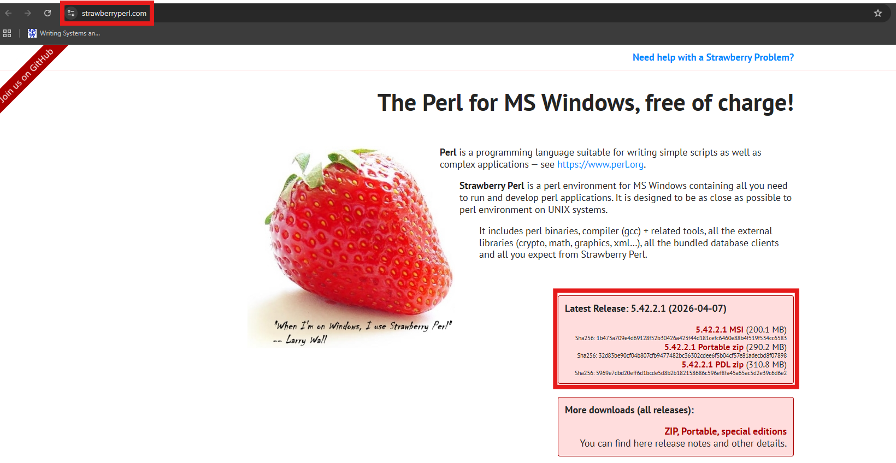
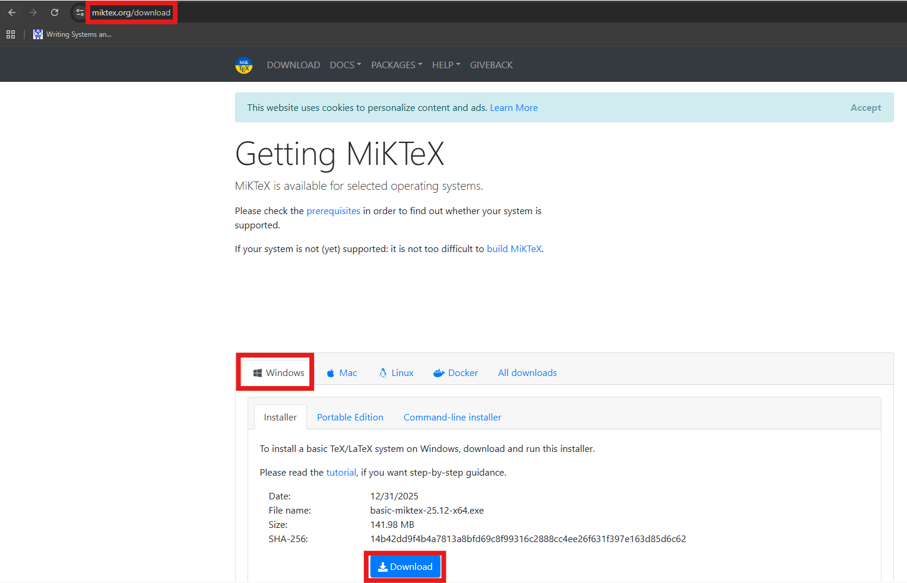
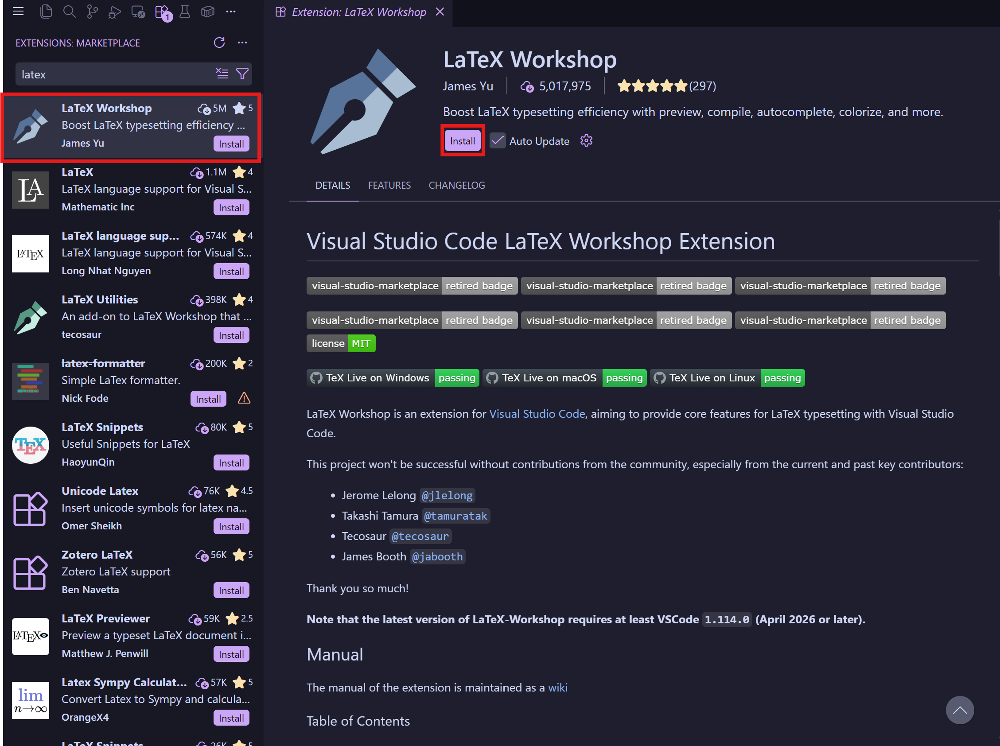
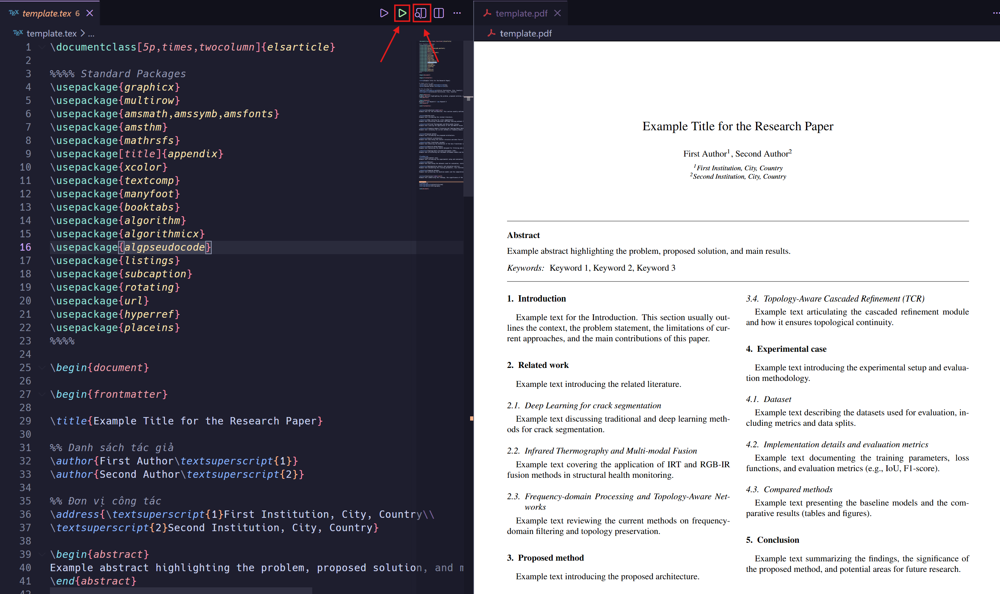

1 Cài đặt Strawberry Perl (Bắt buộc)
💡 Lý do: Perl là ngôn ngữ lập trình được sử dụng nhiều trong quá trình xử lý tài liệu của LaTeX (ví dụ như
latexmk để biên dịch thông minh). Đây là yêu cầu bắt buộc cài đặt để MiKTeX hoạt động trơn tru.

Các bước thực hiện:
- Truy cập trang chủ của Strawberry Perl: Strawberry Perl
- Tải về phiên bản mới nhất dành cho Windows (thường là bản 64-bit).
- Mở file
.msivừa tải và tiến hành cài đặt bằng cách nhấn Next cho đến khi hoàn thành (Finish).
2 Cài đặt MiKTeX
MiKTeX là trình quản lý và biên dịch LaTeX chính cho hệ điều hành Windows, giúp tự động cài đặt các thư viện (packages) bạn dùng mà chưa có sẵn trong máy tính.

Các bước thực hiện:
- Truy cập trang chủ MiKTeX: Download MiKTeX.
- Nhấn nút Download để tải bản Installer về máy.
- Mở file vừa tải lên, tiếp nhận các mục điều khoản và nhấn Next.
- Ở mục Install MiKTeX on this computer, hãy chọn Install MiKTeX only for me (hoặc for anyone tùy theo quyền của bạn) → Next.
- Ở màn hình Settings:
- Preferred paper: Chọn
A4. - Install missing packages on-the-fly: Chuyển sang Yes. Việc chọn Yes giúp hệ thống tự động tải các gói thiếu về mà không hỏi thêm gây gián đoạn quá trình biên dịch.
- Preferred paper: Chọn
- Tiến tới Next và Start để phần mềm bắt đầu cài đặt.
📝 Lưu ý quan trọng: Sau khi cài xong, bạn nên mở MiKTeX Console từ màn hình Start Menu, nhấn vào mục Updates, ấn Check for updates rồi chọn Update now để đảm bảo có bản cập nhật mới nhất.
3 Cài Extension LaTeX Workshop (trên VS Code)
Chúng ta sẽ bỏ qua bước cài đặt VS Code. Nếu đã cài sẵn VS Code, bạn hãy tận dụng nó làm trình hiển thị soạn thảo (editor) LaTeX vì nó vô cùng mạnh mẽ, dễ tùy biến.

Các bước thực hiện:
- Mở phần mềm Visual Studio Code.
- Chuyển sang khu vực quản lý Extensions bằng cách nhấn vào biểu tượng khối xếp hình ở cột bên trái (hoặc bấm Ctrl + Shift + X).
- Nhập chữ LaTeX Workshop vào ô tìm kiếm.
- Chọn tiện ích của tác giả James Yu (thường có hàng triệu lượt tải) và nhấn nút Install.
LaTeX Workshop có trình biên dịch nội bộ mạnh mẽ, nó sẽ tự động nhận diện MiKTeX và latexmk để build tài liệu của bạn một cách mượt mà nhất.
4 Biên dịch file LaTeX đầu tiên
Hãy cùng tạo thử một file tài liệu hoàn chỉnh có hỗ trợ tiếng Việt!
- Tạo một thư mục mới trên máy tính (ví dụ:
C:\MyFirstLaTeX). - Kéo thả thư mục đó vào VS Code (hoặc vào File > Open Folder).
- Tạo một file mới với đuôi .tex, ví dụ đặt tên là
main.tex. - Copy đoạn mã sau và dán vào file
main.tex:
\documentclass{article}
% Khai báo các gói cơ bản hỗ trợ hiển thị Tiếng Việt
\usepackage[utf8]{inputenc}
\usepackage[vietnamese]{babel}
\title{Tài Liệu LaTeX Đầu Tiên}
\author{Tên của bạn}
\date{\today}
\begin{document}
\maketitle
\section{Lời nói đầu}
Xin chào! Đây bài thực hành tạo tài liệu định dạng LaTeX đầu tiên được biên dịch trên máy cá nhân của tôi qua VS Code và MiKTeX. LaTeX mang lại khả năng trình bày văn bản cực kì chuyên nghiệp và nhất quán.
\section{Công thức Toán học}
Với LaTeX chúng ta có thể dễ dàng viết mọi công thức toán học, ví dụ như định lý Pytago:
\[ a^2 + b^2 = c^2 \]
hoặc tích phân đường cong dài:
\[ \int_{-\infty}^\infty e^{-x^2} dx = \sqrt{\pi} \]
\end{document}🛠 Cách Biên dịch (Build) và xem kết quả:

- Trong LaTeX Workshop, mỗi khi bạn lưu file (Ctrl + S) nó sẽ tự động build lại mọi thứ phía ngầm! Rất tiện lợi.
- Chạy thủ công: Nhấn vào biểu tượng nút Play màu xanh lá ở góc trên bên phải thanh công cụ của VS Code (hiển thị khi đang mở file tex).
- Xem file PDF: Nhấn vào biểu tượng View LaTeX PDF (hình tờ giấy nằm cạnh nút Play) ở góc phải, nên chọn View in VSCode tab. Khi chia đôi màn hình, một bên viết nội dung, một bên xem PDF sẽ tự động refresh.
⚠️ Lưu ý về Package (Gói mở rộng): Trong lần đầu biên dịch file, MiKTeX sẽ tự động báo nếu phát hiện thiếu các gói thư viện (như
Mẹo nhỏ: Thỉnh thoảng hộp thoại này bị ẩn phía sau các cửa sổ khác, nên nếu bạn thấy file tốn file rất lâu để biên dịch (hoặc bị đơ), hãy thu nhỏ màn hình và để ý thanh Taskbar xem có bảng yêu cầu cài đặt của MiKTeX đang chờ bạn nhấn không nhé!
babel, inputenc, v.v.). Khi hộp thoại cài đặt của MiKTeX bật lên, bạn chỉ cần đơn giản nhấn nút Install để máy tự động tải về tiếp. Mẹo nhỏ: Thỉnh thoảng hộp thoại này bị ẩn phía sau các cửa sổ khác, nên nếu bạn thấy file tốn file rất lâu để biên dịch (hoặc bị đơ), hãy thu nhỏ màn hình và để ý thanh Taskbar xem có bảng yêu cầu cài đặt của MiKTeX đang chờ bạn nhấn không nhé!